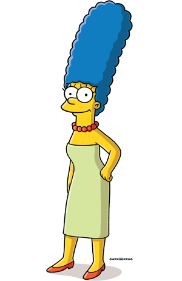
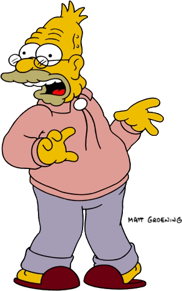

Los Simpson (en inglés, The Simpsons) es una serie estadounidense de comedia, en formato de animación, creada por Matt Groening para Fox Broadcasting Company y emitida en varios países del mundo. La serie es una sátira de la sociedad estadounidense que narra la vida y el día a día de una familia de clase media de ese país (cuyos miembros son Homer, Marge, Bart, Lisa y Maggie Simpson) que vive en un pueblo ficticio llamado Springfield.
La familia fue concebida por Groening y poco después debutó en una serie de cortos de animación producidos por James L. Brooks. Groening creó una familia disfuncional y nombró a sus personajes en honor a los miembros de su propia familia, sustituyendo su propio nombre por Bart.23 Los cortos pasaron a formar parte de El show de Tracey Ullman el 19 de abril de 1987,4 pero después de tres temporadas se decidió convertirlos en una serie de episodios de media hora en horario de máxima audiencia. Constituyó un éxito de la cadena Fox y fue la primera serie de este canal en llegar a estar entre los 30 programas más vistos en la temporada 1992-1993 en Estados Unidos.
Desde su debut el 17 de diciembre de 1989, se han emitido más de 600 episodios, habiendo iniciado su trigesimosegunda temporada.6 En el final de la decimoctava temporada, el 20 de mayo de 2007, se emitió en los Estados Unidos el episodio 400: You Kent Always Say What You Want. En la mayoría del mundo los días 26 y 27 de julio de 2007 se estrenó Los Simpson: la película, la cual recaudó cerca de 526 millones de dólares en todo el mundo.
| Homer Simpson | Marge Simpson | Bart Simpson |
| Es el padre de la familia Simpson y protagonista; tiene 39 años, es obeso, calvo y con poco sentido común, aunque ama a todos sus hijos, aun así, su relación con Bart muchas veces es temperamental y agresiva | Es la madre de Bart, Lisa, Maggie y esposa de Homer, tiene 35 años. Es una madre abnegada, fanática del orden y la limpieza, en muchas ocasiones es la voz no atendida de la moderación y la razón aunque posee una actitud puritana y crítica que oscila entre la inocencia y el fanatismo intolerante. Siempre que se enfada hace un sonido similar a un "hrmmm". Siempre está en discusión con Homer, tratando de hacerle ver que su comportamiento es totalmente infantil, en algunos episodios es sobreprotectora con sus hijos. | Es el hijo mayor, tiene 10 años de edad. Es travieso y a veces hiperactivo; muchas veces se mete en líos principalmente por tener ideas vandálicas o que se salen de control. Es un maestro del skate, tirachinas y grafiti. |
|  | ||
| Lisa Simpson | Maggie Simpson | Abraham Simpson |
| Es la hija del medio en la familia. Tiene 8 años, es muy madura para su edad, aunque también es egocéntrica y siempre quiere ser completamente perfecta; en muchas ocasiones ha sido criticada por ser la opinión que a nadie le interesa oír y por su idealismo desenfocado que la lleva a participar en movimientos y actividades de protesta donde lejos de solo protestar incluso intenta imponer su punto de vista obligatoriamente como sucedería cuando se hizo vegetariana. Lleva una relación estresante con su hermano Bart, aunque cuando se ponen de acuerdo son una dupla efectiva y de temer que han tenido logros enormes como detener criminales o ayudar a gente importante. Tiene un IQ de 158 | Es la bebé y la menor de la familia. Tiene 1 año, y físicamente es la versión preescolar de Lisa. Tiene el cerebro de un constante infractor de la ley e incluso en varias ocasiones ha usado armas de fuego y agredido gente; a pesar de ello mantiene la inocencia y ternura de una bebé. Siempre demuestra un comportamiento más inteligente y despierto de lo que un niño de su edad debería tener. Tiene la manía de llevar un chupete en la boca que rara vez se lo quita. Solo ha hablado ocho veces y solo tres se confirmaron. | Es el padre de Homer, sargento durante la Segunda Guerra Mundial, y también se muestra que siendo un niño estuvo en la Primera Guerra Mundial; Tiene 86 años, fue enviado a una casa de retiro por Homer poco después de casarse con Marge, aunque en algunos episodios vive con la familia. |
|  |
La ciudad de Springfield actúa como un universo completo que permite a los personajes enfrentarse a los problemas de la sociedad moderna. El tener a Homer trabajando en una central nuclear permite comentar el estado del medio ambiente natural.76 Seguir los años de Bart y Lisa por la Escuela Primaria de Springfield permite a los guionistas de la serie ilustrar asuntos controvertidos sobre el tema de la educación. La ciudad posee además un amplio número emisoras de televisión que permite a los realizadores hacer chistes sobre sí mismos y el mundo del entretenimiento.
Algunos comentaristas han notado que la serie es política en su naturaleza y susceptible de un sesgo de izquierdas.78 Al Jean admitió en una entrevista que «Nosotros [la serie] somos de inclinación liberal».79 Los guionistas a menudo evidencian su inclinación por ideas progresistas, aunque hacen chistes con todo el espectro político.80 La serie a menudo presenta gobiernos y grandes empresas como entidades insensibles dispuestas a aprovecharse del trabajador medio.79 Por tanto, los guionistas frecuentemente presentan a las figuras de la autoridad con una luz oscura y desfavorable. En Los Simpson, los políticos son corruptos, los ministros eclesiásticos como Reverend Lovejoy se muestran indiferentes hacia los feligreses y los policías locales son unos incompetentes.
La religión es otro de los temas principales; en tiempos de crisis la familia frecuentemente vuelve sus ojos a Dios, y la serie se ha ocupado de la mayoría de las religiones mayoritarias (como el cristianismo, judaísmo o hinduismo, entre otras).